HTML
HiperText Markup Language

O HTML é o componente básico da web, ele permite inserir o conteúdo e estabelecer a estrutura básica de um website. Portanto, ele serve para dar significado e organizar as informações de uma página na web.
Sem isso, o navegador não saberia exibir textos como elementos ou carregar imagens e outros conteúdos.
Os hipertextos são conjuntos de elementos conectados. Esses podem ser palavras, imagens, vídeos, documento, etc. Quando conectados, formam uma rede de informações que permite a comunicação de dados, organizando conhecimentos e guardando informações.
Criando listas
As listas são muito importantes quando queremos listar alguns itens no site e também para a criação de menu de navegação.
Listas ordenadas:
Uma lista ordenada começa com a tag <ol> e seus respectivos itens da lista ficam dentro da tag <li>. Por padrão as listas ordenadas são ordenadas por números, mas também iremos ver como ordena-la por outros métodos. Exemplo:
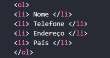
O resultado aparecerá assim:
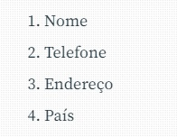
Podemos ordenar também por a,b,c,d, etc. Caso queira que seja ordenada por letras, basta acrescentar <ol type="a">.
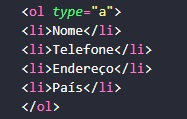
O resultado aparecerá assim:
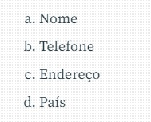
Além desses dois tipos de ordenação, existem diversos tipos como por exemplo, Algarismos Romanos.
Listas desordenadas:
Já as Listas desordenadas são iniciadas com a tag <ul> e finalizadas com </ul>.
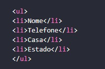
O resultado aparecerá assim:
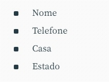
Lista por definição:
Já as Listas por definição são um pouco mais diferente, elas são representadas pela tag <dl>, seguido de <dt> e <dd>, ficando assim no código:
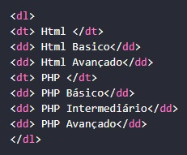
O resultado aparecerá assim:

A tag âncora <a>
Essa tag define um hiperlink, que é usado para vincular de uma página a outra.
O atributo mais importante do elemento é o atributo, que indica o destino do link: <a href:"">
Por padrão, os links aparecerão da seguinte forma em todos os navegadores:
Um link não visitado é sublinhado e azul
Um link visitado é sublinhado e roxo
Um link ativo é sublinhado e vermelho
Exemplo:
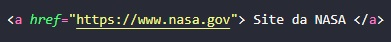
O resultado aparecerá assim:
Site da NASA
Adicionando ícone em uma página:
Para adicionar ícone em uma página basta preencher a tag <link rel="icon"> no cabeçalho com uma imagem e direcioná-la à página através do <href>. Exemplo:
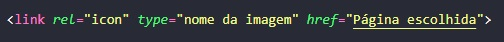
Tag <div>
O elemento <iv> define uma divisão ou seção em um documento HTML. O elemento div é frequentemente usado como um contêiner para outros elementos, o que facilita na estilização de blocos.
Por padrão, a div gera uma line-break (quebra de linha) automática ao ser utilizada. Isso ocorre pois possui como display padrão um elemento de bloco, ou seja display block.
Portanto, para utilizar a div, basta colocar os elementos que quiser dentro da tag <div> como na sintaxe abaixo:
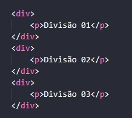
O resultado aparecerá assim:
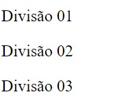
Tag <Style>
O elemento <style> contém informações de estilo para um documento ou uma parte do documento. Exemplos:
Aplicando uma folha de estilo simples:

O resultado aparecerá assim:
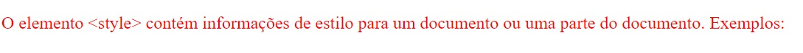
Aplicando uma folha de estilo com escopo:
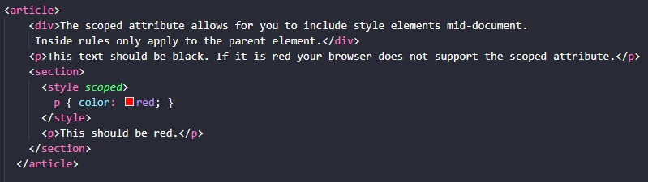
O resultado aparecerá assim:
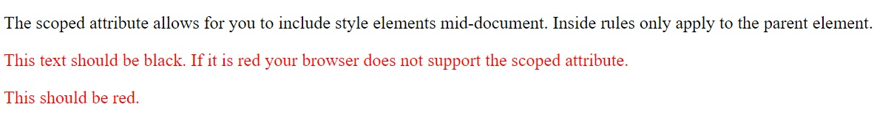
Tag <img src>
Para colocar uma única imagem em uma página da web, usamos o elemento <img>. Isso é um elemento vazio (quer dizer que não possui conteúdo de texto ou tag de fechamento) que requer no mínimo um atributo para ser útil — src (às vezes pronunciado como seu título completo, source).
O atributo src contém um caminho apontando para a imagem que você deseja incorporar na página, que pode ser uma URL relativa ou absoluta.
Por exemplo, se sua imagem for chamada dinossauro.jpg, e está no mesmo diretório de sua página HTML, você poderia inserir a imagem assim:
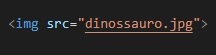
Se a imagem estivesse em um subdiretório de images, que estivesse dentro do mesmo diretório da página HTML, então você a incorporaria da seguinte maneira:
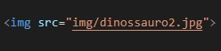